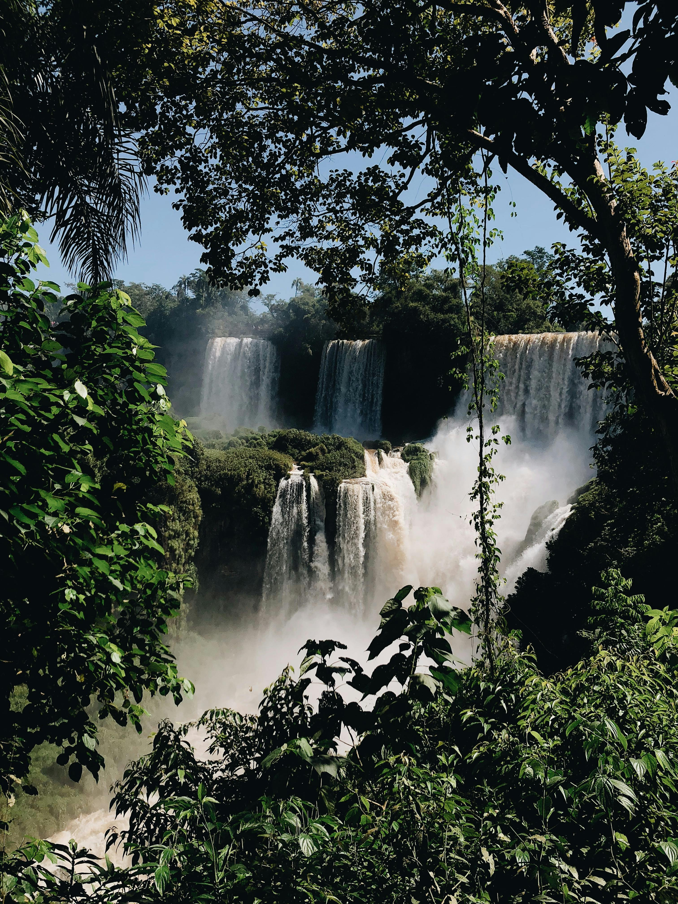
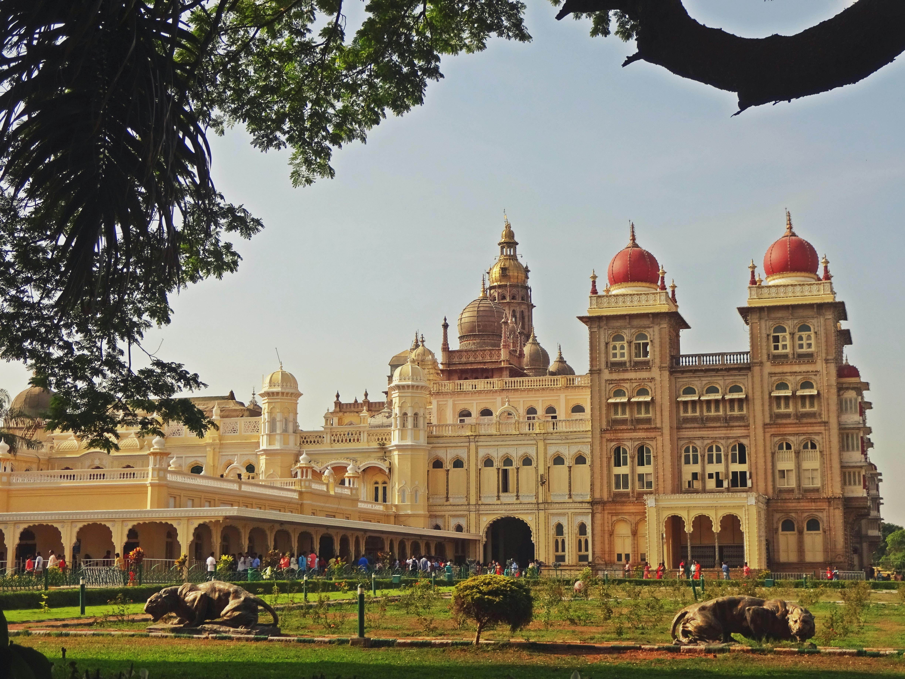

Darjeeling-Himalayan Beauty
Perched in the Eastern Himalayas, Darjeeling enchants with misty mountain views, emerald tea gardens, and the iconic Toy Train winding through its colonial charm. Known as the “Queen of the Hills,” it offers a serene blend of nature, culture, and breathtaking sunrises over Kanchenjunga.

Jaganaath-temple
The Jagannath Temple in Hyderabad, built by the Odia community in 2009, is a stunning replica of the Puri temple, featuring intricate Kalinga-style architecture and vibrant sandstone carvings. Located in Banjara Hills, it hosts the annual Rath Yatra and offers a serene spiritual experience in the heart of the city.

Araku-Waterfalls
Nestled in the lush Eastern Ghats, Araku Valley’s waterfalls—like Katiki, Chaparai, and Sangda—cascade through dense forests and rocky terrain, offering serene escapes and thrilling treks. These natural wonders are perfect for picnics, photography, and soaking in the tranquil beauty of Andhra Pradesh.

Mysore Palace Building
The Mysore Palace, also known as Amba Vilas Palace, is a majestic Indo-Saracenic structure blending Hindu, Islamic, and Gothic styles, crowned by a gilded dome and surrounded by lush gardens. It served as the royal residence of the Wadiyar dynasty and remains one of India's most iconic architectural marvels.